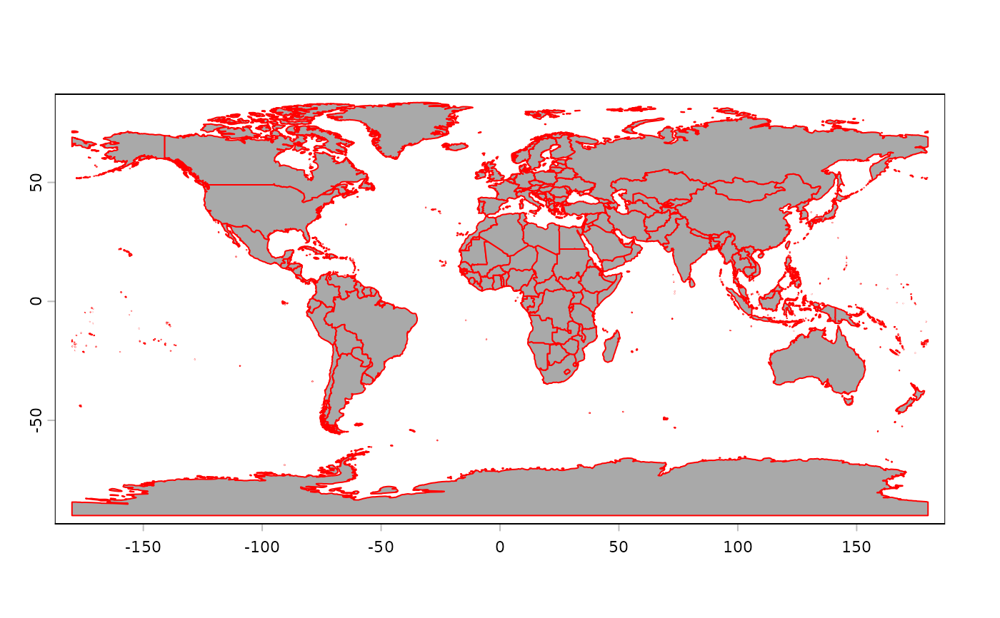
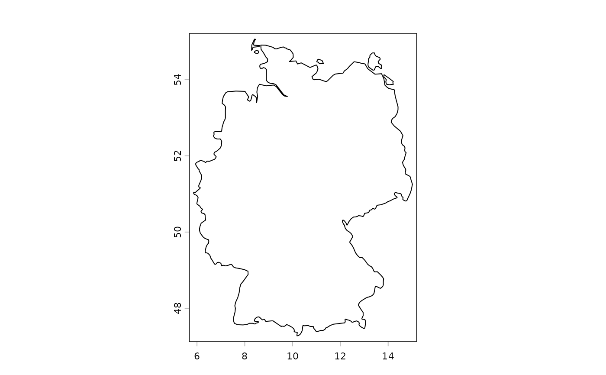

This dataset contains a polygon SpatVector (from terra).
It can be used to draw the borders of world countries. Each polygon corresponds
to a country (or territory) whose name is stored in the column name, so that
countries can be selected by name (see examples).
Source
This SpatVector is derived from the package rnaturalearth. Please refer to this other package for description and sources of this dataset. See example for details on how we created the dataset.
See also
OceanMaskfor another polygon used to embellish the plots
Examples
plot(CountryBorders, border = "red", col = "darkgrey")

## Selecting a country by name:
head(CountryBorders$name)
#> [1] "Zimbabwe" "Zambia" "Yemen" "Vietnam" "Venezuela" "Vatican"
Germany <- CountryBorders[CountryBorders$name == "Germany", ]
plot(Germany)

## This can be used, for example, to download elevation data for a given
## country only:
terra::ext(Germany)
#> SpatExtent : 5.8575195312500057, 15.0166015625, 47.27880859375, 55.058740234375001 (xmin, xmax, ymin, ymax)
# getelev(
# file = "elevation_DE_z5.tif",
# long_min = terra::xmin(Germany), long_max = terra::xmax(Germany),
# lat_min = terra::ymin(Germany), lat_max = terra::ymax(Germany)
# )
## How did we create this file?
## Uncomment the following to create the file as we did
## (we used rnaturalearth 1.2.0 and rnaturalearthdata 1.0.0)
# if (require(rnaturalearth) && require(terra)) {
# CountryBorders <- rnaturalearth::ne_countries(scale = "medium", returnclass = "sf")
# CountryBorders <- vect(CountryBorders[, "name"])
# #terra::saveRDS(CountryBorders,
# # file = "inst/extdata/CountryBorders.rds", compress = "xz")
# }